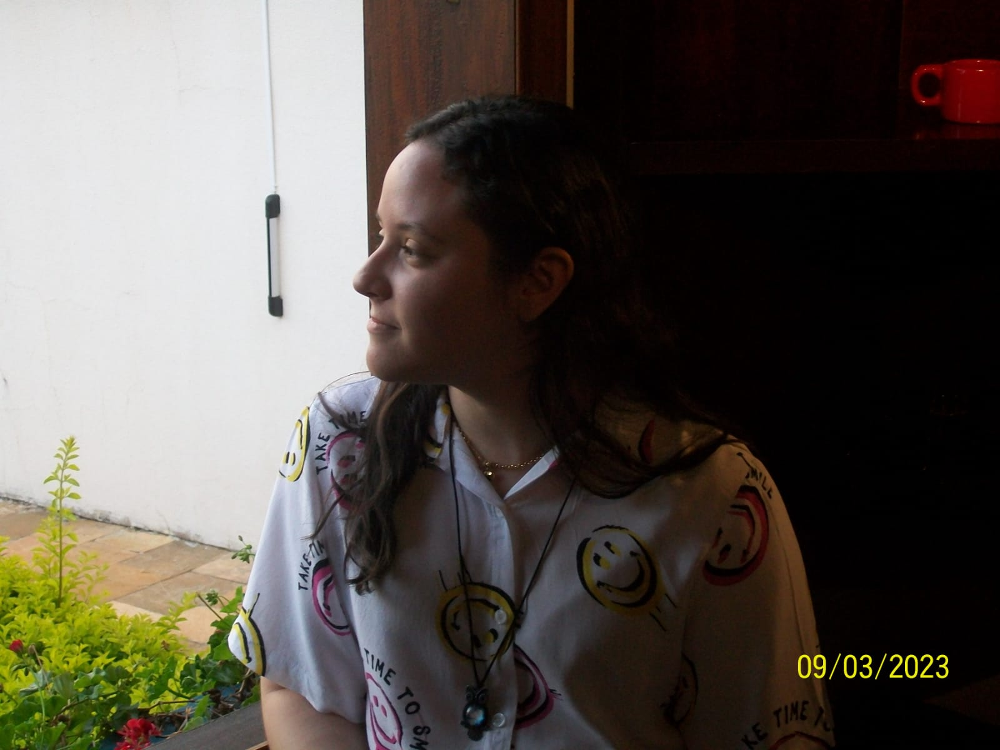

Sobre a Toca da Coruja
A Toca da Coruja é uma biblioteca literária online criada para conectar leitores a histórias que confortam,
desafiam e transformam.
Aqui você encontra desde clássicos que moldaram gerações até títulos independentes e contemporâneos.
Nossa missão
Tornar a leitura mais acessível e prazerosa: reunir livros diversos, recomendar boas leituras e apoiar
descoberta literária — para todos os
gostos e idades.
- Promover inclusão por meio do catálogo
- Incentivar a formação leitora
- Ser um espaço seguro para todas as histórias
Nossa história
A Toca nasceu da paixão por livros e do desejo de criar um lugar onde leitores pudessem descobrir títulos de
forma simples.
Começamos como uma curadoria pequena e hoje hospedamos centenas de obras — sempre com curadoria humana e
carinho.
Equipe

Nathália Cavalini
Fundadora & curadora — escolhe os livros e cuida da curadoria temática.
Equipe Editorial
Leitores e revisores que garantem a qualidade das recomendações e descrições.
Suporte & Tecnologia
Quem mantém o site, integra o sistema e cuida dos recursos de conta e busca.
Nossos valores
- Diversidade — representamos vozes variadas.
- Transparência — sobre curadoria e fontes.
- Comunidade — apoio entre leitores.
Como ajudar
Você pode colaborar de várias formas:
- Doando livros ou indicando títulos
- Enviando avaliações e reviews
- Compartilhando a Toca nas redes
Quer doar? Escreva para cavalinilivros@gmail.com com título, estado do livro e sua
cidade.
Contato & Perguntas
FAQ rápido
Posso sugerir um livro? Sim — use o formulário de contato com a sugestão.
Como criar conta? Clique em "Cadastre-se" no canto esquerdo e siga as instruções.